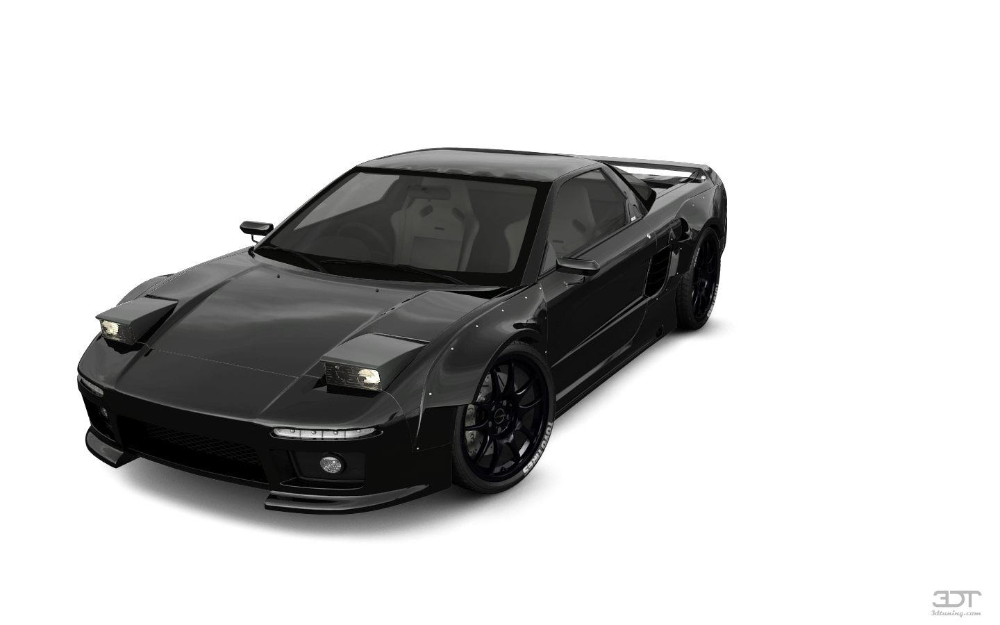

Honda NSX
The NSX was made between 1990 and 2005. It was designed to be a rear wheel drive sports car with a 3L V6 that could compete with the V8 Ferraris at the time, so they had Ayrton Senna test it out and he basically said it drove terribly so they reworked nearly everything on it and turned it into a supercar.